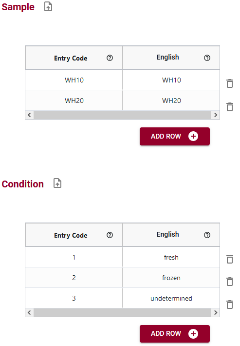

For each attribute that you wanted to add entry codes for, you will need to specify the code and any language-specific labels. Read our blog post for a worked example of how to use entry codes.
For example, in financial data entry systems, there may be complex numerical codes that are recorded in the dataset. However, most people cannot remember the specific code numbers, but they can remember the account name that is associated with the code. In this example, the Entry Code is the numerical code that is expected in the dataset, but then you can give that numerical code an English (and other language) label to help users enter data.
Another example would be a species name where the specific Entry Code may be the Latin genus/species name while the English label may be the common name.
If you don't need to have specific labels created for the Entry Codes (e.g., you create an Entry Code list of GO terms), you can copy the Entry Code into the language-specific language columns.
You can also import your entry code lists from a .csv file or from another schema. This can save effort for typing out entry code lists. Read our blog post about importing entry codes for more details.
Below are some examples of entry codes that have been entered into the Semantic Engine. In these examples you can see that entries and labels can either be the same or different, depending on user needs.
